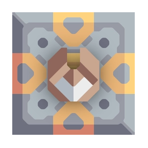

Skyblock tweaks
Позволяет всегда строить ядро "осколок" (На некоторых серверах присутствует такая возможность, но из-за бага невозможно построить ядро), также позволяет планировать строительство структур на глубокой воде, т.к. некоторые сервера позволяют это делать, а клиент миндастри - нет. Не используйте этот мод при обычной игре! Он создан только для skyblock серверов и может повредить ваши сохранения и кампанию, так как меняет 2 механики игры!
Better Mindustry 7.0.4
Мод, направленный на добавление юнитов, турелей и ресурсов в ванильном стиле.
Build core units
Мод, позволяющий производить юнитов из ядер Серпуло на воздушной фабрике.